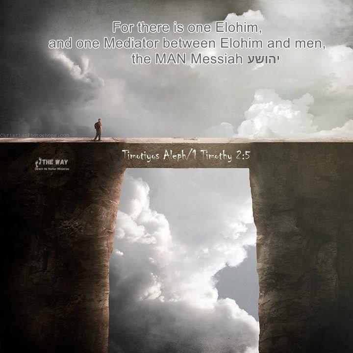

Contents

The Mediator and the “New Bride”
In the present era, there exists a significant disconnect within the divine family of יהוה. A misinterpretation of the Plan of Salvation. We are being instructed that יהוה had to descend to Earth in human form and experience death. According to their belief, this is necessary because of His own Law, which prohibits a husband from marrying the same bride again. Only the husband's death frees יהוה from this "Law."
The issue is that an Eternal being cannot die, as that is what defines their godliness and eternity. Additionally, יהוה made a pledge to never manifest on Earth as a human. He made a strong commitment to never violate that promise and reaffirmed it two times for added emphasis. יהוה does not go back on His promises, which presents us with a predicament.
Hoshea 11 9 I will not carry out my fierce anger, nor will I devastate Ephraim again. For I am יהוה, and not a man
Bemidbar/Numbers 23:19 19 "יהוה is not a man, that He should lie, Nor a son of man (Yahushua is called the son of man 87 times), that He should repent (Yahushua went to Yochanan to be Mikvah’d for remission of sin); Has He said (He would never come to Earth as a man), and will He not do it (keep this vow)? Or has He spoken, and will He not make it good (on His promises)?
In the book of Bemidbar/Numbers 23:19, יהוה made a promise by declaring that He is not a human being. He then confidently stated that He will indeed fulfill this promise and make it a reality. Yahushua often referred to himself as the "son of man," emphasizing his humanity. Yahushua made it clear on 87 occasions that he was not a deity but rather a mortal being.
Yahushua, as a human being, approached Yochanan to undergo baptism as a way to symbolize the forgiveness of sins and to align himself with righteousness, ultimately leading to his spiritual completion. Both יהוה and Yahushua explicitly rejected the concept of incarnation multiple times. According to Scripture, it is mentioned multiple times that יהוה is both the Father and Elohim of Yahushua. The concept of Elohim coming to Earth in human form, violating His own promises, and experiencing death, is something that does not align with how a divine being operates. We should simply pay attention to our older brother as he shares these plain truths.
Yochanan/John 20 17 Yahushua said, "Do not hold on to me, for I have not yet ascended to the Father. Go instead to my brothers and tell them, 'I am ascending to my Father and your Father, to my Elohim and your Elohim.'"
The original design for humanity's redemption, depicted in the stars and foretold through prophecy, involved a human who would attain perfection and subsequently rise to serve as a mediator between יהוה and mankind.
Yochanan/John 17:3 3 Now this is eternal life: that they know You (יהוה), the only true Elohim, and (come to You through) Yahushua (the Mediator) who is the Messiah (Anointed King of Yisra’el), whom you have sent (in fulfillment of Your promises as foretold through the prophets).
Timotiyos Aleph/Timotiyos Aleph/1 Timothy 2:5 For there is one Elohim (יהוה) and one mediator between יהוה and mankind, the man (not the Elohim) Yahushua the Messiah!
The Plan of Salvation through a Mediator
I would like to highlight how יהוה has made provisions for the redemption of His offspring in a concise manner. There was never any prophecy or promise stating that יהוה would descend to Earth and experience death. This is a different Gospel message from what the Prophets, Yahushua, and his disciples preached. Those who proclaim Incarnation should be condemned for disrespecting and blaspheming The Almighty Creator.
Galatiyim/Galatians 1 6 I marvel that you are so readily turning away from Him (יהוה) who called you in the favour of Messiah, to a different ‘Good News, 7 which is not another, only there are some who are troubling you (with incarnation) and wishing to pervert the Good News of Messiah(that he was a human being Yochanan Aleph/1 John 4). 8 However, even if we, or a messenger out of heaven, bring a ‘Good News’ to you beside what we announced to you, let him be accursed. 9 As we have said before, and now I say again, if anyone brings a ‘Good News’ to you beside what you have received, let him be accursed.
Definition of Incarnation:
Glossary Definition: Incarnation – PBS
A central doctrine of the Christian faith which affirms that God took human form in the body of Christ. In other words, God was 'in-carnated' in human flesh.
https://en.wikipedia.org/wiki/Incarnation_(Christianity)
Those who teach Incarnation are cursed for calling יהוה a liar, saying He broke His vow never to come to Earth as a man in Bemidbar/Numbers 23:19.
Yochanan/John 5:1-20 This is the conquering Spirit (of יהוה) that has overcome the world, even our faith (in the promises of יהוה). 5 Who is it that overcomes the world? Only the one who believes that Yahushua is the son of יהוה (not יהוה in the flesh) … Whoever believes in the Son of יהוה (and denies incarnation) accepts this testimony (that Yahushua was born (water) by the seed of David (bloodline) and begotten diving through resurrection by the Spirit of Set-apartness… water, blood, and Spirit Rom. 1:2-3). Whoever does not believe יהוה (that יהוה is not a man nor the son of man) has made יהוה out to be a liar (saying יהוה came to Earth as a man), because they have not believed the testimony יהוה has given about his Son (that he was born human, inherited the title Melchizedek, and begotten divine).
More on the testimony of water, blood, and spirit later. Yes, יהוה married both The House of Yisra’el and the House of Yehudah. We read how both houses were unfaithful to יהוה, and by Law, He issued them a certificate of divorce. This was part of the Plan of Salvation to illustrate that we cannot be in a direct marriage covenant with יהוה and create a “need” for the Messiah to mediate a “New Covenant” where he is the Bridegroom and we are Yahushua’s Bride.
יהוה at that point had His prophets foretell of a Savior, an Arbiter, whom יהוה would select among men, idealize, and bring to perfect obedience. יהוה would enter into a “Father/Son” contract with that Savior. That man would be risen Divine through restoration (not human birth) to Intervene a New Contract as an Eternal High Priest and atone for the unfaithfulness of the children of יהוה. That is the Plan revealed the Heavenly Scroll and in the Earthly scrolls.
Romiyim/Romans 1 2 which He promised before (Yahushua did not pre-exist) through His prophets in the Set-apart Scriptures (both Heavenly and Earthly Scrolls), 3 concerning His (first born) Son (from the dead Chazon/Revelation 1:5), who came (born human) of the seed of Dawiḏ (by both parents) according to the flesh (it takes two human parents to pro-create “according to the flesh”), 4 who was designated (Divine) Son of Elohim with power, according to the Set-apart Spirit (יהוה’s Spiritual Eternal Seed), by the resurrection from the dead: יהושע Messiah, the Master of us
Ib’rim/Hebrews 58 though being a (future) Son (of יהוה upon resurrection Romiyim/Romans 1:3), He learned obedience (to יהוה) by what He suffered (due to disobedience). 9And having been perfected (he was not born perfect or a god), He became the Causer of everlasting deliverance to all those obeying Him (and follow his righteous example and abide in covenant with him as his bride)
The doctrine of Incarnation says that יהוה came to Earth as a man, was imperfect, disobedient, and had to be perfected in obedience… Blasphemy!
Qualified to Intervene/Mediate The Covenant and Atone for our sins as Eternal High Priest
יהוה made special preparations for the Messiah's bloodline, ensuring that he would be qualified to serve as a "Mediator" between יהוה and the chosen individuals who would become His new Bride, distinct from the previous brides. That lineage belonged to the esteemed Zadok family, who served as High Priests. Then, יהוה would arrange for a descendant of David to become king through Solomon (by means of Yahushua's father Yoseph), and this individual would be uniquely born with a combination of David's Royal Bloodline and the House of Zadok ancestry. This firstborn and eldest child of יהוה would receive the name Melchizedek, known as the "Ruling Zadok", and would be granted the throne of David and forever serve as the Zadok High Priest.
In order to demonstrate His role in the Plan of Salvation, יהוה would have this son conceived through a divine birth, utilizing Yoseph's seed to fertilize Maryam's womb without any physical intercourse, similar to modern-day in vitro fertilization techniques. The anticipated savior would be born from Yoseph, who is a descendant of the Davidian lineage, and Miryam, who is from the Hasmonean lineage and directly connected to Zadok. The Melchizedek, mentioned in Yochanan/John Chapter 1, came into existence when the prophetic word was made true and manifested in human form, dwelling in our midst.
Regarding the lineage of righteous High Priests in anticipation of the Messiah, Zadok can be traced back through his male ancestors to Eleazar, who was the son of Aharon, the esteemed High Priest. The verse in Shemu’el Bet/2 Samuel 8:17 and Dibre HaYamim Aleph /1 Chronicles 24:3 states that David appointed certain individuals to serve as officials in his government. The genealogy of Ezra traces his ancestors back nine generations in a direct male line from
Phineas, who was the son of Eleazar. This is mentioned in Ezra 7:1 and also in Dibre HaYamim Aleph/1 Chronicles 5:30, where Ezra is noted as being ninth in line of descent from Phineas.
Ezra 7:1-4 ...Zadok, The son of Ahitub, son of Amaryah, son of Azaryah, son of Mirayoth, son of Zerachyah, son of Uzzi, son of Bukki, son of Avishua, son of Phineas
In the same manner, the Hebrew Bible recounts that during that period, Phineas (the son of Eleazar) calmed יהוה's wrath through his devotion. He was deserving of the divine blessing of יהוה to fulfil the prophecy of being the descendant of Melchizedek.
Bemidbar/Numbers 25 13 Phineas the son of Eleazar the son of Aaron the priest. Behold I give to him my covenant of peace, and will be his, and his progeny after him, (a) covenant of everlasting priesthood in turn of his zealousness for his Elohim, and he atoned for the sons of Yisra’el
This becomes highly crucial while examining Yahushua's eligibility as the Eternal High Priest. Yahushua was likely descended from the Zadok lineage, which was the bloodline of High Priests specifically chosen for him. This is the way in which Yahushua was given the responsibility to bring about peace, act as the Eternal High Priest, and have the authority to cleanse sins. It was not because Yahushua was divine, but this is clearly explained in the Scriptures and clarified in Bemidbar/Numbers 25:13.
Those who are influenced by the false Messiah (Incarnation) are now controlled by a corrupted mentality and are unable to comprehend the teachings of the Scriptures. They fail to impart genuine knowledge, despite it being clearly evident.
If Yahushua cannot be proven to be a Zadok High Priest, then he cannot mediate the "New Covenant of Peace", he cannot serve as Eternal High Priest, and atone for humanity. Nothing about Yahushua was “super spiritually appraised because he was some kind of demi-god”, everything was laid out in detail by יהוה through bloodlines.
If there is no evidence that Yahushua is a Zadok High Priest, then he is unable to act as the mediator for the "New Covenant of Peace," fulfil the role of Eternal High Priest, or provide atonement for humanity. Yahushua's spiritual significance was not due to being a demi-god; instead, יהוה meticulously predetermined everything about him through bloodlines.
Ib’rim/Hebrews 4 14Therefore, since we have a great high priest who has passed through the heavens (fulfilled The Mazzaroth/Heavenly Scroll), Yahushua the (firstborn) son of יהוה (from the dead Chazon/Revelation 1:5), let us hold fast our confession (that Yahushua came in the flesh Yochanan Aleph/1John 1:4). 15 For we do not have a high priest who cannot sympathize with our weaknesses (he was not a god), but a high priest who has been tempted in all things as we are (he was human, יהוה cannot be tempted by Evil Ya’aqov/James 1:13), yet without sin (in the office of High Priest in context Zekaryah/Zechariah 3). 16 Therefore let us draw near (to יהוה through the Mediator) with confidence (Being embraced as members of His household, we are acknowledged as His offspring and the beloved partner/bride of His firstborn Son.)
Ib’rim/Hebrews 1 4 [Yahushua] having become so much better than the messengers, as he has inherited (through blood lineage) a more excellent Name (Melchizedek) than them.
The evidence provided by יהוה confirms that Yahushua is indeed the chosen Messiah.
יהוה would then testify about this Messiah, with three agreeing witnesses, namely water, blood, and spirit.
- Water: he would be born human through his mother’s womb Tehillim/Psalms 22:9 For You are the One who took Me out of the womb; Causing Me to trust while on My mother’s breasts. 10 I was cast upon You from birth. From My mother’s belly You have been My Ěl. • Bloodline: He, through his lineage from David, would receive and reclaim the rightful position of power held by David (via Yoseph), and also inherit and restore the sacred role of the Priesthood of Zadok (through Miryam). • Spirit: he would be begotten divine through resurrection by the seed of יהוה, the Ruach.
Yochanan/John 5 4 This is the conquering Spirit that has overcome the world, even our faith (in the promises of יהוה). 5 Who is it that overcomes the world? Only the one who believes that Yahushua is the son of יהוה (not יהוה in the flesh?) 6 This (Yahushua) is the one who came by water (the womb of a woman) and blood (of the seed of David)—Yahushua the Messiah. He did not come by water only, but by water and blood. And it is the Spirit who testifies (that Yahushua is the son of יהוה by the power of the resurrection) because the Spirit is the truth. 7 For there are three (witnesses) that testify (that Yahushua is the son of יהוה): 8 the Spirit of Set-apartness, the water and the blood; and these three are in agreement (that Yahushua is The Son of יהוה). 9 We accept (the lying) human testimony (of incarnation, the Spirit of the False Messiah), but יהוה’s testimony is greater because it is the testimony of יהוה, which he has given about his Son Yahushua (born human through water by the seed of the bloodline of David, begotten Divine by the Spirit of Set-Apartness Romiyim/Romans 1:2-4). 10 Whoever believes in the Son of יהוה accepts this testimony. Whoever does not believe יהוה (that יהוה is not a man nor the son of man) has made יהוה out to be a liar (saying יהוה came to Earth as a man), because they have not believed the testimony יהוה has given about his Son (that he was born human, inherited Melchizedek, and begotten divine). 11 And this is the testimony: יהוה has given us eternal life, and this life is (found) in (covenant with) his Son (Yochanan/John 17:3). 12 Whoever has the (Spirit of the) Son (that Yahushua was born human begotten divine through resurrection) has (eternal) life; whoever does not have (the testimony about) the Son of יהוה does not have (eternal) life.
Romiyim/Romans 1 2 which (a Mediator) יהוה promised beforehand (Yahushua did not pre- exist) through His prophets in the Set-Apart Scriptures (both Heavenly and Earthly Scrolls), 3 concerning His (firstborn) Son (from the dead Chazon/Revelation 1:5), who was born (human) of a descendant of David (by both parents) according to the flesh (According to biological processes, the act of pro-creation requires the participation of two human parents.), 4 who was declared the (Divine) Son of יהוה with power by the resurrection from the dead (Chazon/Revelation 1:5), according to the Spirit of Set-Apartness (יהוה’s Seed), Yahushua the Messiah
יהוה and Yahushua enter into covenant
In the Plan of Salvation, יהוה would establish a covenant with His firstborn son, to be his Father, in order to grant forgiveness for the sins of all His children.. This specific agreement can be found in the biblical book of Zekaryah/Zekaryah, specifically in Chapter 3.
Those who teach under the Spirit of the False Messiah cannot teach this prophecy. This text clearly refutes their erroneous belief by emphasizing that Yahushua is not יהוה (God), but rather had his sins forgiven through Mikvah. They may argue that this is referencing Yahushua III, the great grandfather of our Messiah.
This interpretation is incorrect because the prophecy is actually referring to the Branch and describing an event that did not happen in Yahushua III's lifetime. However, it depicts an important incident that actually took place in the life of our Savior.
The prophecy in Zekaryah/Zekaryah Chapter 3 allows us to witness the dialogue that took place between יהוה and Yahushua in the desert subsequent to Yahushua's immersion by Yochanan/John (where he was recognized as The Passover Lamb). Afterward, Yahushua sought יהוה's anointing as the Messiah/Branch by fleeing into the desert like a scapegoat.
Yahushua escaped to the desert for 40 days and nights, seeking validation from his Father, thus fulfilling the symbolic act of the scapegoat. The incident can be found elaborately described in the first chapter of the book of Marqos/Mark.
Marqos/Mark 1 1 The beginning of the Good News of יהושע Messiah, the Son of Elohim (not יהוה). 2 As it has been written in the Prophets, “See, I send My messenger before Your face, who shall prepare Your way before You, [Mal_3:1]. 3 a voice of one crying in the wilderness, ‘Prepare the way of יהוה, make His paths straight.’ ” (through Mikvah) [Isa_40:3]. 4 Yoḥanan came immersing in the wilderness and proclaiming an immersion of repentance (circumcised hearts and lives living sacrifices) for the forgiveness of sins. 5 And all the country of Yehuḏah, and those of Yerushalayim, went out to him and were all immersed by him in the Yarděn River (they knew he was the true High Priest), confessing their sins. 6 And Yoḥanan was clothed with camel’s hair and a leather girdle around his waist and eating locusts and wild honey. 7 And he proclaimed, saying, “After me comes One who is mightier than I, whose sandal strap I am not worthy to stoop down and loosen. 8 “I indeed did immerse you in water, but He shall immerse you in the Set-apart Spirit.” 9 And it came to be in those days that יהושע came from
Natsareth of Galil and was immersed by Yoḥanan in the Yarděn. 10 And immediately, coming up from the water, He saw the heavens being torn open and the Spirit coming down on Him like a dove (as an earnest guarantee of his future resurrection). 11 And a voice came out of the heavens, “"(today)You are My Son, the Beloved, in whom I did delight.” (as Yahushua fulfilled all righteousness) 12 And immediately the Spirit drove Him into the wilderness (in fulfillment of the scapegoat). 13 And He was there in the wilderness forty days, tried by Satan, and was with the wild beasts. And the messengers attended Him.
While suffering from extreme hunger, thirst, and being on the brink of death, Satan approached Yahushua and tried to tempt him into seizing Yerushalayim forcefully while they were both in the desert. This is the point where the vision in the book of Zekaryah/Zekaryah Chapter 3 begins. We find Yahushua lying on the desert ground, experiencing severe dehydration and starvation. He appears frail and weak, resembling a stick that has been scorched by the intense heat of the sun. Meanwhile, Satan is furious as Yahushua has rejected his proposition.
Now, we will tune in to the conversation where יהוה verifies that Yahushua is the chosen one and they both express their agreement on Yahushua's role in the Renewed Covenant.
The deep connection and agreement between יהוה and Yahushua are clearly presented to us. יהוה made a promise to Yahushua that if he remains loyal to his part of the agreement, then
יהוהwill forgive all His [יהוה ‘s] children for their sins. This prophecy serves as crucial evidence validating Yahushua as the Messiah. Additionally, it serves as evidence for Jews that Yahushua is specifically identified as the Branch. However, our understanding of incarnation hinders us from acknowledging the singular prophecy that has the power to completely alter the discussion.
Zekaryah/Zechariah 3 – יהוה’s consecration of Yahushua as High Priest, King of Kings, and Eternal Judge 1 Then he showed me Yahushua, the high priest, standing before the angel of יהוה, and Satan standing at his right side to accuse him (Marqos/Mark 1:13). 2 יהוה (through His proxy messenger) said to Satan, “יהוה rebuke you, Satan! יהוה, who has chosen Yerushalayim, rebuke you (Satan tempted Yahushua by presenting the opportunity to seize control of Yerushalayim by using force.)! Is not this man a burning stick snatched from the fire?” (Yahushua was suffering from extreme hunger and dehydration under the scorching desert sun. Matt. 4:1-11) 3 Now
Yahushua was dressed in filthy clothes (metaphor of sin Yeshayahu/Isaiah 64:6) as he stood before the messenger of יהוה. 4 The messenger said to those who were standing before him, “Take off his filthy clothes.” Then יהוה said to Yahushua, “See (after taking off his filthy rags i.e. sin Yeshayahu/Isaiah 64:6), I have taken away your sin (through Mikvah), and I will put fine garments (of the High Priest) on you.” 5 Then I (יהוה) said (through the messenger), “Put a clean turban (of the High Priest) on his head.” So they put a clean turban on his head and clothed him (in the garments of the High Priest), while the messenger of יהוה stood by.*** New Covenant made directly with Yahushua****6 The messenger of יהוה gave this charge to Yahushua: 7 “This is what יהוה Almighty says: ‘If (יהוה makes a conditional promise) you will walk in obedience to me and keep my requirements (as High Priest) you will govern my house (i.e. King over creation) and have charge of my courts (Eternal Judge), and I will give you a place (right hand of יהוה) among these standing here. 8 “‘Listen, High Priest Yahushua, you and your associates seated (who came) before you (Adam, Enoch, Mosheh, Eliyah, etc.), who (those seated before him) are men symbolic of things to come (All of them resembled The Messiah, but they were not the actual Branch.): I am going to bring (you) my servant (from this point forward), the Branch (he is The Messiah). 9 See, the stone I have set in front of Yahushua! There are seven (number of perfection) eyes on that one stone (to witness), and I will engrave an inscription on it,’ says יהוה Almighty, ‘and I will remove the sin of this land in a single day’ (the day Yahushua, in obedience, dies as Pesach Lamb)
This particular passage holds paramount significance among all the texts in Scripture.
However, the reason why nobody instructs it is due to the fact that our teachers are possessed by the deceptive forces of the False Messiah. This specific prophecy serves as undeniable proof that Yahushua is indeed the Messiah. It explicitly outlines his purpose and highlights how we are saved by יהוה through the obedience of Yahushua to our Heavenly Father. This is the explanation for why Yahushua chose to go to Yochanan to be immersed, in order to "fulfill all the lawful obligations" within him and guide him towards perfection, as Yahushua himself declared.
Mattithyahu/Matthew 3:15
Yahushua replied, "Let me be Mikvah’d now; it is properly required in The Law, for us to do this to fulfil all righteousness (have his sin washed away with living water)."
The purpose of Mikvah is to ensure purity, which is why Yochanan/John (Yochanan) was in the desert. He had been given the task to "prepare the way for the Branch" and was immersing people for the forgiveness of their sins. There is no other explanation. The reason is simply this: Yahushua was demonstrating the correct way for all of us to have our sins forgiven by יהוה through the use of life-giving water.
In the Renewed Covenant, Zekaryah Chapter 3 revealed the true significance of Yahushua's position. He was the Messiah, also known as the Branch, and from that moment on, after undergoing a ritual purification as the High Priest, he had to adhere to the Law with utmost obedience and serve as a righteous example for us to follow. If he were to do so, יהוה made a promise to protect against the penalties of death as outlined in the Law, which is referred to as Grace.
יהוה chooses a new bride for His son
The Scriptural text shows how יהוה would carefully select a "New Bride" for His firstborn son. This particular selection would not solely rely on bloodline criteria, unlike previous choices, and would be a unique combination of qualities inherited from both previous brides. This New Bride, known as Remnant Yisra'el, would be chosen from both the House of Yisra'el and the House of Yehudah. It would be wed to יהוה’s son, not to יהוה.
Romiyim/Romans 9:24 24 even us (Remnant Yisra’el in context), whom he also called, not only from among the Jews (The House of Yehudah) but also from among the Gentiles (where The House of Yisra’el is scattered)?
Sha'ul thoroughly explains the characteristics of this New Bride and emphasizes the specific qualities that set her apart and make her truly "new". This is an entirely fresh group that is selected not solely based on their family heritage.
יהוה would select a wife for His firstborn son, and join His son in matrimony with this New Bride. His selected offspring would subsequently be offered the chance to "remain within" a covenant with His firstborn son.
Yochanan/John 15:7
…6 "If anyone does not abide in Me, he is thrown away as a branch and dries up; and they gather them, and cast them into the fire and they are burned.
By having a Mediator, we can now unite with יהוה in a family bond as His sons and daughters, rather than directly through marriage. Our oneness with יהוה is achieved by being united with His son in matrimony.
Yochanan/John 17 3 Now this is eternal life: that they know You (יהוה), the only true Elohim, and (come to You through) Yahushua who is the Messiah, whom you have sent (in fulfillment of Your promises as foretold through the prophets to be the Mediator).
Timotiyos Aleph/1 Timothy 2 5 For there is one Elohim (יהוה) and one mediator between יהוה and mankind, the man Yahushua the Messiah
Yochanan/John 17 19 "And for their sakes I sanctify myself (through the Truth of Scripture), that they also might be sanctified through the truth. 20 Neither pray I for these alone, but for them also which shall believe on me through their word (enter into covenant); 21 That they all may be one; as thou, Father, art in (covenant with) me, and I in (covenant with) thee, that they also may be one in (covenant with) us (through me): that the world may believe that thou hast sent me (to mediate)."
Yochanan/John 1 12 Yet to all who did receive Yahushua as the Messiah, to those who believed in (the covenant that bears) his name, he gave the right to become children of יהוה.
Ib’rim/Hebrews 2 …11 For both He who sanctifies (יהוה) and those who are sanctified (Yahushua and the rest of the sons) are all from one Father; for which reason Yahushua is not ashamed to call them brothers, 12saying, "I WILL PROCLAIM YOUR NAME TO MY BRETHREN, IN THE MIDST OF THE CONGREGATION I WILL SING YOUR PRAISE." 13 And again, "I, Yahushua, WILL PUT MY TRUST IN יהוה." And again, "BEHOLD, I AND THE (REST OF THE) CHILDREN WHOM יהוה HAS GIVEN ME (as a Bride)."…
The firstborn son will take on the role of the Bridegroom, while the remaining children will become the Bride of the Messiah. This is the significance behind the yearly wedding celebration known as The Appointed Times or Set-Apart Days. The Spring Feasts symbolize the covenant between the Messiah and His Bride. The Fall Feasts symbolize a special celebration known as "The Wedding Supper of the Lamb," during which the Bridegroom, Yahushua, weds a new bride referred to as Remnant Yisra'el. This prediction can be found in The Heavenly Scroll, which has been present since the beginning of time. It describes the Messiah's “crucifixion” and his portrayal as a slain lamb, an event that has been witnessed in The Heavenly Scroll since its creation.
Chazon/Revelation 13 8 All inhabitants of the earth will worship the beast--all whose names have not been written in the Lamb's book of life, the Lamb who was slain from the creation of the world.
The firstborn son would need to sacrifice his own blood in order to fulfil the obligation of shedding blood as part of a marriage agreement. This passage from Tehillim/Psalms highlights that the knowledge of יהוה's Plan is universally communicated to all people across the Earth through the regular rising and setting of the sun and moon, without the need for words or vocal proclamation. This celestial communication of knowledge is conveyed by The Mazzaroth/Heavenly Scroll.
Tehillim/Psalm 19 19 The heavens (H8064: shamayim - the stars and constellations of the Mazzaroth/Heavenly Scroll/Zodiac) are telling of the glory of יהוה; And their expanse is declaring the work of His hands. 2 Day to day (the Zodiac) pours forth speech, And night to night (the Zodiac) reveals knowledge. 3 There is no speech, nor are there words; Their (stars and constellations of the Zodiac) voice is not heard. 4 Their line (ecliptic plane through which the sun appears to travel when viewed from Earth) has gone out through all the earth, And their utterances to the end of the world. In them (the constellations) He has placed a tent for the sun, 5 Which (the Sun) is as (a shadow or metaphor) a bridegroom (the Messiah) coming out of his chamber (to run the course of a wedding and marry the Bride); It rejoices as a strong man (Messiah) to run his course (Plan of Salvation). 6 The Sun’s rising is from one end of the heavens, And its circuit (Zodiac or Path) to the other end of them; And there is nothing hidden from its heat.
David is providing a clear explanation of the Mazzaroth/Heavenly Scroll/ Zodiac, which is a chart depicting the sun's movement across the sky. He also mentions the ecliptic, a line representing the sun's path on Earth, as it passes through the various constellations or starry hosts within the Signs of the Zodiac each year. David properly understood the message contained in the Zodiac.
The sun emerges from the horizon, and then it travels across the sky like a groom exiting his room for the Heavenly Wedding. The Feast Cycle is a meticulous celebration that honours and highlights the wedding event. This is achieved in Yahushua the Savior. Yahushua identifies himself as the "bridegroom" and believes that those who "listen to Him" with an understanding of the Zodiac Tehillim/Psalms 19:2 find happiness. It brings Yahushua great joy to embody and fulfil the meaning of this message. Indeed, the Zodiac serves as the earliest proclamation of the Messiah in the Gospel message.
Yochanan/John 3 29 He who has the bride is the bridegroom; but the friend of the bridegroom, who stands and hears Him, rejoices greatly because of the bridegroom’s voice (proclaimed in The Heavenly Scroll Tehillim/Psalms 19). Therefore, this joy of mine is fulfilled (Yahushua fulfilled the message contained in The Heavenly Scroll).
Mattithyahu/Matthew 25 4 The wise ones, however, took oil in jars along with their lamps. 5 The bridegroom was a long time in coming (2,000 years at the end of the Age of Pisces), and they all became drowsy and fell asleep. 6 At midnight the cry rang out: “Here’s the bridegroom! Come out to meet him!”
Chazon/Revelation 19 9 And the angel said to me, “Write this: Blessed are those who are invited to the marriage supper of the Lamb.” And he said to me, “These (words written in The Heavenly Scroll) are the true words of יהוה.”
In simpler terms, David views the Sun as a model or representation of The Messiah. The concept of the sun being compared to the bridegroom, symbolizing The Messiah, is a recurring theme in various texts. Indeed, it is accurate that the Sun was brought into existence to bear witness to the arrival and deeds of the Messiah. This prominent statement in Tehillim/Psalms 19 implies that יהוה incorporated the plan of salvation into the Zodiac, and by means of the stars, He has been showcasing His divine scheme to humanity in a singular perspective exclusive to Earth.
This individual mentioned as Yahushua is the firstborn son. Yahushua made a personal covenant with יהוה and faithfully carried out his responsibilities to יהוה. יהוה made a promise to designate him as the Eternal High Priest, Judge, and King over all of creation, which יהוה would grant to him as his inheritance. The remaining offspring of יהוה then form an alliance with the Mediator, entering into a marriage-like covenant, and subsequently becoming part of יהוה's family. When the Messiah and his Bride unite in marriage, יהוה ceases to be our Husband and instead becomes our Father.
Spirit –
The Testimony to the resurrection.
The Spirit of Set-Apartness is among the 3 testimonies that יהוה provided to verify the identity of Yahushua as the Son of יהוה.
Yochanan Aleph/1 John 5 7 For there are three that testify (Yahushua is the Son of יהוה): 8 the Spirit of Set-Apartness, the water and the blood; and the three are in agreement (that Yahushua is the Messiah and Son of יהוה).
It is these 3 witnesses of יהוה that testify that Yahushua is the Messiah. They are ‘the testimony of Yahushua’. יהוה’s witness of the Spirit is that יהוה declared Yahushua His Son through the power of the resurrection of the dead:
Romiyim/Romans 1 3 concerning His Son Messiah Yahushua our King, who was born of the seed of David (blood) according to the flesh (water), 4 and declared to be the Son of יהוה with power according to the Spirit of Set- Apartness (Spirit), by the resurrection from the dead. 5 Through The Covenant with Yahushua we have received grace and apostleship for obedience to the faith among all nations for יהוה’s name, 6 among whom you also are called to be in covenant through Yahushua the Messiah;
All the sons of יהוה have the witnesses
of water, blood, and spirit
As Scripture declares we must have the “testimony of Yahushua the Messiah”.
Chazon/Revelation 12 17 Then the dragon was enraged at the woman and went off to wage war against the rest of her offspring--those who keep יהוה’s commands and hold fast their testimony of Yahushua.
Chazon/Revelation 19 9 Then he said to me, “Write: ‘Blessed are those who are called to the marriage supper (The Covenant with Yahushua is a marriage covenant) of the Lamb!’” And he said to me, “These are the true sayings of יהוה.” 10 And I fell at his feet to worship him. But he said to me, “See that you do not do that! I am your fellow servant, and of your brethren who (themselves) have the (same) testimony of Yahushua (water, blood, spirit). Worship יהוה! For the testimony of Yahushua is (that he fulfilled) the spirit of prophecy.”
All humans share a common birth and experience the presence of water. However, those who are selected by יהוה are specifically descendants of Avraham, Yischaq/Isaac, and Ya’aqov/Jacob and possess the evidence of their bloodline. Ultimately, we will all be recognized as children of יהוה through the Spirit of Set-Apartness and the transformative power of resurrection.
The members of “Remnant Yisra’el” are the only ones who are saved and they come exclusively from the bloodline of Avraham, Yischaq/Isaac, and Ya’aqov/Jacob. They are “the elect” chosen from among the House of Yehudah (Jews) and the House of Yisra’el (scattered among all nations).
Romiyim/Romans 9 יהוה’s Sovereign Choice of the Remnant 27 Yeshayahu/Isaiah cries out concerning Yisra’el (Remnant Yisra’el): "Though the number of the Yisra’elites (both Houses) be like the sand by the sea, only the remnant will be saved."
Ib’rim/Hebrews 2 16 For surely it is not angels Yahushua helps, but Avraham’s descendants.
Saved by Faith in the Promises of יהוה
In Christianity, we are taught that our salvation is based on faith rather than our adherence to the Torah/Law. Understanding the meaning of faith is essential to grasp the truth that we are saved by it.
Faith, by definition, is expressed through keeping the Torah/Law of יהוה and believing in the promises made in Scripture which is the Torah and Prophets. In Scripture (the Torah and Prophets) יהוה promised us:
In essence, faith entails following יהוה's Torah/Law and having trust in the promises described in the Scriptures, namely the Torah and Prophets. According to the Scriptures (the Torah and Prophets), יהוה made a pledge to us.
· Eternal life for obedience
· Death for transgression
· A Pesach/Passover Lamb to cover our transgression
· A Shabbat Rest
· A Shabbat Resurrection
· The High Priest will make sacrifices to atone for our sins, which are the result of breaking יהוה 's Torah/laws.
· A marriage agreement/covenant in which He would grant us an affectionate mindset of following His rules, which would be internalized within us.
Having faith in יהוה without actively following His commandments is pointless and lacks true sincerity. Many Christians are wilfully unaware of this truth and opt to put their faith solely in Jesus Christ (who they perceive as the false messiah), believing no additional actions or beliefs are necessary. Arguing that “It is finished”.
Scripture states that salvation comes from having faith in the Torah of יהוה, where His promises are bestowed upon us.
Tehillim/Psalm 119 147 I rise before dawn and cry for help; I have put my hope in your word. 148 My eyes stay open through the watches of the night that I may meditate on your promises. 149 Hear my voice in accordance with your love; preserve my life (eternal life), O יהוה, according to your Torah/Laws (eternal life is the promise for obedience to the Torah). 150 My comfort in my suffering is this: Your promise (in the Torah) preserves my life.
Ib’rim/Hebrews 6 11 We want each of you to show this same diligence (in keeping the Torah of יהוה) to the very end, in order to make your hope sure. 12 We do not want you to become lazy (abolish the Law), but to imitate those who through faith and patience inherit what has been promised (in the Law which is eternal life).
Ib’rim/Hebrews 10 23Let us hold unswervingly to the hope we profess (in the promises of יהוה), for He who promised (all of יהוה’s promises are found in the Torah and Prophets true scripture) is faithful.
Kepha Bet/2 Peter 1 4 Through these he has given us his very great and precious promises, so that through them (the promises of יהוה in the Torah and Prophets) you may participate in the divine nature and escape the corruption in the world caused by evil (breaking His Torah) desires.
Tehillim/Psalm 85 8 I will listen to what יהוה your Elohim will say; he promises peace to his people, his saints-but let them not return to folly.
Tehillim/Psalm 119 140 Your promises have been thoroughly tested, and your servant loves them.
Tehillim/Psalm 145 13 Your kingdom is an everlasting kingdom, and your dominion endures through all generations. יהוה is faithful to all His promises and loving toward all He has made.
2 Qorintiyim Bet/2 Corinthians 1 20 For no matter how many promises יהוה has made, they are "Yes" in covenant with Yahushua (The Covenant with Yahushua transcends and completes all six previous covenants).
2 Qorintiyim Bet/2 Corinthians 7 1 Since we have these promises, dear friends, let us purify ourselves from everything that contaminates body and spirit, perfecting set-apartness out of reverence for יהוה (which is defined as obedience to His Torah).
Eph’siyim/Ephesians 1 13 And you also were included in The Covenant with Yahushua when you heard the word of truth (יהוה fulfilled His promises in Yahushua Yochanan/John 1), the gospel of your salvation (Yahushua serves as the sacrificial Lamb during the Pesach/Passover festival, symbolically fulfilling the laws and regulations regarding death penalties mentioned in Qolasim/Colossians 2:14, which he ultimately overcame on the stake). Having believed (that יהוה alone is Elohim, the GREATEST commandment Marqos/Mark 12:29), you were marked (on your forehead Chazon/Revelation 22) in יהוה (the name of Elohim) with a seal (The Shema Devarim/Deuteronomy 6:4-8), the promised Set-Apart Ruach (of loving obedience to the Torah Yehezqel/Ezekiel 11), 14 which is a deposit guaranteeing our inheritance until the redemption of those who are יהוה’s possession-to the praise of יהוה’s glory.
Ya’aqov/James 1 12 Blessed is the man who perseveres under trial, because when he has stood the test, he will receive the crown of life that יהוה has promised to those who love him (to love יהוה is to keep His Torah Yochanan Aleph/1 John 5:3).
Yochanan Aleph/1 John 2 24 See that what you have heard from the beginning (the Torah and Prophets) remains in you (written on your heart). If it does, you also will remain in the Son and in the Father. 25 And this is what he promised us (in the Torah) - even eternal life.
The Covenant with Yahushua involves demonstrating our faith through actions that serve as a spiritual representation of the sacrificial rituals involving animals. The genuine offerings to יהוה involve displaying faithful commitment through actively adhering to His Torah. The evidence of the truth can be observed in The Covenant with Yahushua, which emphasizes the importance of internalizing its principles and fostering a spirit of love and obedience towards His Torah. The spiritual sacrifices demanded by וה יה are characterized by expressing love and adherence to the Torah's principles.
Tehillim/Psalm 40 6 Sacrifice and meal offering You have not desired; My ears You have opened; Burnt offering and sin offering You have not required. 7 Then I said, “Behold, I come; in the scroll of the book it is written of me (having a heart for the Law of יהוה is a witness of us in The Book of Life). 8 I delight to do Your will, O my Elohim; Your Law is within my heart (the foundation of The New Covenant Yirmeyahu/Jeremiah 31).”
Yehezqel/Ezekiel 36 26 I will give you a new heart (for my Law and write my Torah/Law on it) and put a new spirit (of loving obedience) in you; I will remove from you your heart of stone (legalistic observance of the Torah/Law out of fear of death) and give you a heart of flesh. 27 And I will put my Ruach in you and move you to follow my decrees and be careful to keep my Torah/Laws.
Faith that lacks the accompanying
actions of obeying the Torah is
essentially lifeless faith.
Ya’aqov/James 2 8 If you really fulfill the royal law according to the Scripture (the Scriptures he is referring to are the Torah and Prophets there was no NT for another 300 years. He is speaking to a Jewish audience), “You shall love your neighbor as yourself,” you do well; 9 but if you show partiality, you commit sin, and are convicted by the Law (specifically the decrees in the Law) as transgressors. 10 For whoever shall keep the whole law, and yet stumble in one point, he is guilty of all (eternal life is promised for perfect obedience). 11 For יהוה who said, “Do not commit adultery,” also said, “Do not murder.” Now if you do not commit adultery, but you do murder, you have become a transgressor of the Law. 12 So speak and so do (talk the talk and walk the walk) as those who will be judged by the Law of liberty (The Torah, which is symbolized by the death decrees and protected by the blood of the lamb, brings freedom from the fear of death, as seen in the death decrees found within the Torah. The documents containing the orders for death have been covered.). 13 For judgment is without mercy to the one who has shown no mercy. Mercy (blood of the Pesach/Passover Lamb) triumphs over judgment (imposed by the Death decrees in the Torah).14 What does it profit, my brethren, if someone says he has faith but does not have works (of the Torah/Law)? Can faith save him? (no) 15 If a brother or sister is naked and destitute of daily food, 16 and one of you says to them, “Depart in peace, be warmed and filled,” but you do not give them the things which are needed for the body, what does it profit? 17 Thus also faith by itself, if it does not have works, is dead.18 But someone will say, “You have faith, and I have works.” Show me your faith without your works, and I will show you my faith by my works (for instance, expressing our belief in Yahushua as the Pesach/Passover Lamb can be demonstrated by observing the Pesach in acknowledgement of his sacrifice.) 19 You believe that there is one Elohim. You do well. Even the demons believe—and tremble! 20 But do you want to know, O foolish man, that faith without works is dead? 21 Was not Avraham our father justified by works (not just faith) when he offered Isaac his son on the altar? (If Avraham would not have attempted to sacrifice Yitschaq/Isaac in obedience to the command of יהוה, his faith would have been dead faith. He had to express it through action for it to be reckoned to him as faith) 22 Do you see that faith was working together with his works, and by works faith was made perfect? 23 And the Scripture was fulfilled which says, “Avraham believed יהוה (by sacrificing Yitschaq), and it was accounted to him for righteousness.” And he was called the friend of יהוה. 24 You see then that a man is justified by works, and not by faith only. 25 Likewise, was not Rahab the harlot also justified by works when she received the messengers and sent them out another way? 26 For as the body without the spirit is dead, so faith without works is dead also.
All writers in the NT agree with this statement. If you claim to have faith but don't demonstrate it by obeying the Law, then you are being dishonest, and your faith holds no meaning.
Grace is the other side of the coin of Torah
Grace can only be understood and appreciated when viewed within the framework of the Torah.
Grace can be defined as the act of pardoning our offenses against the Torah. This Grace is offered exclusively to individuals who, with a mindset of compassionate obedience, make earnest efforts but ultimately fall short of fully adhering to the Torah.
We possess an everlasting High Priest who continually offers gifts and sacrifices in the presence of יהוה's throne as a representation of our transgressions against the Torah.
Ib’rim/Hebrews 5 Qualifications for High Priesthood the Messiah Our High Priest Forever
1 For every high priest taken from among men (Yahushua was a man appointed High Priest by יהוה) is appointed for men in things pertaining to יהוה (Yahushua was appointed on our behalf in things pertaining to יהוה), that he may offer both gifts and sacrifices (defined in the Torah, outside of the Law there is no definition for such gifts and sacrifices) for sins (transgressing the Torah). 2 He can have compassion on those who are ignorant (of יהוה’s Law) and going astray (from the commands of יהוה), since he himself is also subject to weakness (bound by sinful flesh, Yahushua was baptized by Yochanan/John for repentance of such weaknesses). 3 Because of this (his own guilt of transgression) he is required (to repent) as for the people (he makes sacrifices), so also for himself, to offer sacrifices for (his) sins (Yahushua offered his own life and blood to atone). 4 And no man takes this honor to himself, but he who is called by יהוה, just as Aaron was.
A Priest Forever
5 So also Yahushua did not glorify himself to become High Priest, but it was יהוה who said to Yahushua (upon resurrection):
"You are My Son,
Today I have begotten You."
6 As יהוה also says (of Yahushua) in another place:
"You are a priest forever According to the order of Melchizedek" (Yahushua by bloodline was Melchi (royal) and by bloodline was of The House of Zadok); 7 who (Yahushua), in the days of his flesh (when he was fully human in every way), when he had offered up prayers and supplications (for Yisra’el and himself vs. 3 above), with vehement cries and tears to יהוה who was able to save Yahushua from death, and was heard (by יהוה) because of his (Yahushua’s) godly fear (of or reverent submission i.e. PIETY to יהוה Zekaryah/Zekaryah Chapter 3), 8 though he (Yahushua) was a Son, yet he (Yahushua) learned obedience (to the Torah over time through a life on Earth) by the things which he suffered (being disciplined by יהוה as are all men of יהוה Chazon/Revelation 3:19, Ib’rim/Hebrews 12:6). 9And having been perfected (over time through discipline), he (Yahushua) became (perfected through obedience to the Torah and) the author of eternal salvation (forefather of everlasting life Yeshayahu/Isaiah 9:6) to all who obey him (by keeping the commands of יהוה), 10 (Yahushua was) called by יהוה as High Priest (from among men Ib’rim/Hebrews 5:1) "according to the order of Melchizedek (the witness of blood and testimony of Yahushua)," 11 of whom (Yahushua) we have much to say, and hard to explain, since you have become dull of hearing (mind not set on the Spiritual Law of God but on the flesh which transgresses the Law Romiyim/Romans 8:7). 12 For though by this time you ought to be teachers (of the Torah, at that time there was no such thing as the "New" Testament), you need someone to teach you again the first principles of the oracles of God (the Torah); and you have come to need milk and not solid food. 13 For everyone who partakes only of milk (has abolished the Torah) is unskilled in the word of righteousness (the Torah which is Set-Apart, Righteous, and Good Romiyim/Romans 7:12), for he is a babe. 14 But solid food belongs to those who are of full age (mature Saints with minds set on Spiritual Law), that is, those who by reason of use (by obedience to the Torah/Spirit of the Law) have their senses exercised (trained by the Torah through physical to spiritual parallels) to discern both good and evil (which is defined by the Law of יהוה).
Romiyim/Romans 5 Faith Triumphs in Transgression of Law - Death in Adam, Life in the Messiah
1 Therefore, having been justified by faith (in the promises of יהוה made in the Torah), we have peace with יהוה through our King Yahushua the Messiah (by whose blood we are in covenant with יהוה for forgiveness of transgressing the Law, making us complete in obedience to the Law), 2 through whom (the blood of Yahushua, the Eternal High Priest) also we have access (to יהוה) by faith into this grace (forgiveness of our transgressions as we keep the Law with a spirit of loving obedience not fear of death) in which we stand (keeping the commands but falling short i.e. the battle between Flesh/Spirit), and rejoice (crying Abba Father) in hope of the glory of יהוה (that we will be forgiven and resurrected Elohim promises made in the Torah). 3 And not only that (hope in future glory found through faith in the promises made in the Torah), but we also glory in tribulations (knowing that Yahushua became perfected through them by obedience to the Torah), knowing (by Yahushua’s example) that tribulation produces perseverance; 4 and perseverance, character; and character, hope. 5 Now hope does not disappoint, because the love of יהוה has been poured out in our hearts (the Law of Love, the Torah has been written on the ‘tablets’ of our hearts) by the Set-Apart Spirit (of Truth, one of the 7 Spirits of יהוה) who was given to us.
The Messiah in Our Place
6 For when we were still without strength (to fully obey the Law of Elohim, the Law was weakened by our flesh Romiyim/Romans 8:3), in due time (as proclaimed by the Prophets and promises made in the Torah) Yahushua died (in fulfillment of the Passover Lamb promise found in the Torah) for the ungodly (the transgressors of the Law). 7 For scarcely for a righteous man will one die (it is an amazing thing that someone would even die for a righteous man); yet perhaps for a good man someone would even dare to die (even rarer to die for a good man). 8 But יהוה demonstrates His own love toward us (sons of Elohim), in that while we were still sinners (defined as transgressors of the Torah Yochanan Aleph/1 John 3:4), Yahushua died for us (the perfect example of obedience in love). 9 Much more then (Yahushua made whole the Law as the fulfillment of the Pesach/Passover Lamb promise found in the Law, providing Grace to cover our transgression of the Torah/Law), having now been justified (made just before and one with יהוה in faith by obedience to the Torah) by His (Yahushua's) blood (of the Passover Lamb, the consummation of the marriage covenant), we shall be (upon resurrection) saved from wrath (the second death, the Spiritual meaning of The Pesach/Passover) through him (Yahushua, by the blood of the Pesach/Passover Lamb). 10 For if when we were enemies (hostile to the Torah of Elohim Romiyim/Romans 8:7) we were reconciled to יהוה through the death of His Son (Yahushua, The Pesach/Passover Lamb of
יהוה), much more, having been reconciled (found perfect in obedience to the Law through faith in the covenant with יהוה through Yahushua), we shall be saved (from the second death) by his (eternal) life (Yahushua defeated death in the resurrection). 11 And not only that, but we also rejoice in יה הו (that we are sons) through (faith in) our King Yahushua the Messiah, through whom we have now received the reconciliation (In the future, we will become children of יהוה as we believe in the promise that He would send a Pesach/Passover Lamb. Through this sacrifice, we will completely obey His Torah, receive eternal life as mentioned in the Torah, and be adopted as His sons.).
Death in Adam, Life in the HUMAN Messiah
12 Therefore, just as through one man (Adam disobeyed יהוה’s commands bringing death as promised in the Torah for transgression) sin entered the world, and death through sin (the penalty of sin is death), and thus death spread to all men (not sin, Original Sin is a false doctrine), because all sinned (we aren’t born under sin, we all commit sin that justifies our death)—13 For until the (written) law (in the Mosaic Covenant) came sin was still in the world, but sin is not imputed when there is no law (so since sin was being imputed at the time of Adam… the Law was alive and active… the Law teaches us what is Set-Apart and what is sin). 14 Nevertheless (even without the written Law, the penalty of the Law was active) death reigned from Adam to Mosheh, even over those who had not sinned according to the likeness of the transgression of Adam (יהוה’s Set-Apart Torah was more than just what Adam did), who (Adam) is a type of him (Yahushua) who was to come.15 But the free gift (of Yahushua defeating the Law of Sin and Death) is not like the offense (of bringing into the world sin and death). For if by the one man's offense many died, much more the grace of יהוה and the gift (of grace in light of transgressing the Law) by the grace of the one man, Messiah Yahushua, (atonement had to be at the hands of a human not a god) abounded to many (who would be saved through faith in the promises found in the Law). 16And the gift (of grace in light of transgressing the Law) is not like that (penalty of death for transgressing the Law) which came through the one man who sinned. For the judgment which came from one offense resulted in condemnation (to death of the physical body), but the free gift (of life through obedience and grace in light of transgressing the Law) which came from many offenses resulted in justification (we are justified by our loving obedience to the Law and by Grace as the blood of the lamb covers our transgression). 17 For if by the one man's offense death reigned through the one, much more those who receive abundance of grace and of the gift of (total) righteousness (through Yahushua we are found in total compliance with the Law and that total compliance is a gift as we attempt to keep His Law out of love not fear of death) will reign in (everlasting) life through (blood covenant in and faith in) the one (man), Yahushua who is the (100% fully human in every way) Messiah (the Passover Lamb of יהוה). 18 Therefore, as through one man's offense judgment came to all men, resulting in condemnation (to death of the physical body), even so through one man's righteous act (of self denial, obedience, and love unto death to fulfill the Passover promise) the free gift (of grace in light of transgressing the Law bridging the gap to total obedience to the Torah and the promise of obedience is Life Eternal) came to all men (who have faith in the promises of יהוה), resulting in justification (before יהוה) of life (after death). 19 For as by one man's disobedience many were made sinners, so also by one man's obedience many (not ALL men ever created but many who have faith in the promises of יהוה) will be made righteous (you are saved through faith and made in right standing with the Law). 20 Moreover the (Set-Apart, Righteous, Good) law entered (was given by יהוה) that the offense might abound (God’s Set-apartness was made clear by the Law as well as our need and the promise of a savoir). But where sin (transgression of the Law) abounded, grace (forgiveness of those transgressions) abounded much more (as יהוה, through His Son, has delivered and reconciled us to Himself, in accordance with His promises in the Torah, for those who have faith in Him), 21 so that as sin reigned in death (the Law of Sin and Death or the Law with active death decrees for disobedience to it), even so grace (the Law with the death decrees covered or the Law of the Spirit of Life) might reign through righteousness (keeping the Law) to eternal life through (the blood of and faith in) Yahushua the Messiah (who made whole the Law providing Grace in light of transgression by fulfilling the promise of the Pesach/Passover)
This is the essence of what it means to be “saved by faith”. One person's obedience undid the consequences of another person's disobedience, resulting in our deliverance. The Law of Sin and Death was only broken when a human died in accordance with the Torah. If Yahushua was “god” in any way that sacrifice would have been ineffective! We are saved by faith in the promises יהוה made in His Torah and Prophets and that faith is made alive by our exercising that faith through good works of keeping His Torah.
We make a commitment with Yahushua to seek forgiveness for our inability to completely obey יהוה Torah. The blood of the Pesach/Passover lamb is what provides protection against the laws that call for our death. Through the implementation of these decrees, we are able to fully adhere to and submit ourselves to the Torah as a gracious offering from the Messiah. If we abide by the Torah, we will receive the eternal life that is bestowed upon us as a blessing.